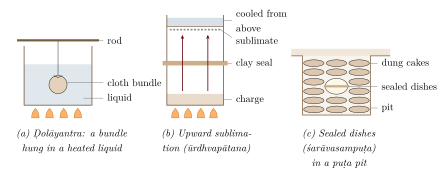

Chapter 2: Rasaśāstra: The Alchemical Literature and Its World¶
2.1 What Rasaśāstra Was¶
Rasaśāstra, “the science of mercury”, is the name the Sanskrit alchemical literature gives itself. Its texts are concerned with the processing of mercury and of a large number of metals and minerals, with two declared goals. The first is dhātuvāda or lohavāda, the transformation of base metals into silver and gold. The second is dehavāda, the transformation of the human body, by means of processed mercury, into a body free of disease, old age and death—the body of a perfected being (siddha). From the beginning there was also a medical use of mercurial and mineral preparations, and over time this became dominant: the later rasa texts are largely pharmacopoeias, and rasaśāstra is today taught in India as a branch of Āyurvedic pharmaceutics (White 1996; Ray 1956; Meulenbeld 1999–2002). Its place in medical practice is treated in Volume 13, Āyurveda, and its Tantric setting in Volume 6, Tantra–Āgama; this chapter concentrates on the literature as a chapter in the history of chemistry.
The phrase “Indian alchemy” is appropriate, provided it is not taken to imply that the rasa texts are simply Indian versions of European or Arabic alchemy. Like those traditions, rasaśāstra combined practical laboratory operations—grinding, heating, sublimation, distillation, amalgamation—with a theory of transformation that modern chemistry does not accept. Unlike European alchemy, it was embedded in Tantric Śaivism, with its initiations, mantras and goddess worship, and in the medical culture of Āyurveda.
Health and Safety Note
The substances discussed in this chapter—mercury, lead, arsenic sulphides, copper salts and others—are toxic. The chapter is history and gives no doses or working procedures; see the full note in Section 1.1.
2.2 Antecedents and Origins¶
The classical medical compendia of Caraka and Suśruta (c. 100 BCE–500 CE) use a number of mineral substances—salts, alkalis, ochres, collyria, metals such as iron and gold—and describe the heating and quenching of metal leaves for medicinal use. Mercury, however, plays only a marginal role in them, and there is no doctrine of mercury as the key to transmutation or immortality (Wujastyk 2003; Meulenbeld 1999–2002). The Arthaśāstra mentions liquid ores and the refining of metals, but again not a mercurial alchemy.
The rasa literature proper emerges towards the end of the first millennium CE. Its earliest surviving works belong roughly to the 10th–12th centuries, and several streams flowed into it (White 1996). Tantric Śaivism supplied its ritual framework, its dialogue form (Bhairava or Śiva instructing the Goddess), its use of mantras and initiation, and the identification of mercury with Śiva’s semen and of sulphur (or mica) with the Goddess’s generative fluid. The Siddha traditions, groups of ascetic adepts who sought bodily immortality and supernatural powers (siddhi) through yoga, ritual and drugs, supplied its goal and many of its heroes: the lists of “perfected masters of mercury” (rasasiddha) in the rasa texts overlap with the lists of Nāth and other siddhas. Buddhist Tantra cultivated the pursuit of elixirs and powers as well, although no surviving rasa text of the early period can be shown to be Buddhist; the Kakṣapuṭa, a compendium of magical rites ascribed to a Siddha Nāgārjuna and sometimes cited in this connection, is of uncertain date and sectarian affiliation. Finally Āyurveda adopted mercurial and mineral preparations as medicines and eventually absorbed rasaśāstra into its curriculum.
Whether the Indian alchemical tradition was influenced by, or influenced, the Chinese and Islamic alchemies with which it shares many features is uncertain. Mercury and cinnabar were central in Chinese alchemy many centuries before the earliest rasa texts, and Arabic alchemy was flourishing by the 9th century. Contacts through trade, Buddhist pilgrimage and the Persianate courts make some exchange likely, but specific borrowings have not been demonstrated (White 1996; Principe 2013).
2.3 The Principal Texts¶
All the dates in this section are approximate; most rest on relative chronology established by quotation, and scholars differ by a century or more (Meulenbeld 1999–2002; White 1996).
2.3.1 Rasahṛdayatantra¶
The Rasahṛdayatantra (“Tantra of the Heart of Mercury”) is ascribed to Govinda, styled bhagavat or bhikṣu. A later tradition identifies him with Govinda Bhagavatpāda, the teacher of the Advaita philosopher Śaṅkara; there is no evidence for this, and the work is usually dated to about the 10th or 11th century. It is one of the earliest surviving systematic treatments of mercury, organised around the processing of mercury through a sequence of operations culminating in its “binding” (bandha) and its use for transmutation and for the body. Its opening verses state the claims of the whole tradition in a single stanza, which the Rasaratnasamuccaya later repeats almost word for word (1.34):
Rasahṛdayatantra 1.3
mūrchitvā harati rujaṃ bandhanam anubhūya muktido bhavati
amarīkaroti sumṛtaḥ ko ’nyaḥ karuṇākaraḥ sūtāt
Swooned, it takes away disease; having undergone binding, it becomes the giver of liberation; well killed, it makes one immortal. What other source of compassion is there than mercury?
The three participles name three of the operations described below—“swooning” (mūrchana), “binding” (bandha) and “killing” (māraṇa)—and attach to each a promised result. A few verses later the text explains why the body matters: liberation, it says, “comes from knowledge, knowledge from practice, and practice is possible only in a stable body” (muktau sā ca jñānāt tac cābhyāsāt sa ca sthire dehe, 1.10), and no herbal or metallic elixir can give that stability except mercury (1.11–13). The passages are quoted from the GRETIL e-text of the Chaukhambha edition (GRETIL 2020a).
2.3.2 Rasārṇava¶
The Rasārṇava (“Ocean of Mercury”), probably of the 11th–12th century, is a dialogue between Bhairava and the Goddess and is the most important early statement of Tantric alchemy. It describes the qualifications of the alchemist and his helpers, the laboratory and its shrine, the apparatus and furnaces, the classes of minerals, the eighteen operations (saṃskāra) on mercury, the “digestion” of metals and minerals by mercury, transmutation, and the use of mercury to perfect the body (White 1996; Ray 1956). The text was edited by P. C. Ray and Hariśchandra Kaviratna in the Bibliotheca Indica (Ray and Kaviratna 1908–1910). It opens with the Goddess asking Bhairava about “liberation in life” (jīvanmukti) and the means to it, and Bhairava’s answer sets out the doctrine of the body on which the rest depends:
Rasārṇava 1.18
karmayogena deveśi prāpyate piṇḍadhāraṇam
rasaś ca pavanaś ceti karmayogo dvidhā mataḥ
By the yoga of action, O Queen of the gods, the preservation of the body is attained; and the yoga of action is held to be twofold: mercury and breath.
2.3.3 Rasaratnasamuccaya¶
The Rasaratnasamuccaya (“Compendium of the Jewels of Mercury”) is attributed to a Vāgbhaṭa, son of Siṃhagupta—the name and parentage also given for the author of the Āyurvedic Aṣṭāṅgahṛdaya (c. 600), which is why the two have often been confused. The compendium is centuries later than that work, and its author must be a different person, or the ascription a borrowed one. The work is generally placed in the late 13th or the 14th century. It describes itself as a compilation: after naming the authorities on whom it draws, the author says that “having examined the tantras of these and of others, the son of Siṃhagupta makes this compendium, the Rasaratnasamuccaya, of mercurial preparations that are perfected and useful for the purposes of treatment” (1.8–9) (GRETIL 2020b). It is arranged in thirty chapters: roughly the first third deals with materials (mercury, the mineral classes, gems, metals), apparatus, furnaces and the laboratory; the rest is a pharmacopoeia arranged by disease. It became the most influential rasa text in later Āyurvedic teaching (Meulenbeld 1999–2002; Ray 1956).
2.3.4 Other Texts¶
Table 2.1 lists some other works that are often cited, with their approximate dates.
| Text | Date | Notes |
|---|---|---|
| Rasendramaṅgala | uncertain (8th–12th c.?) | Attributed to Nāgārjuna; partly preserved |
| Rasendracūḍāmaṇi | 12th–13th c. | By Somadeva; much quoted by later texts |
| Ānandakanda | 13th c. | A large Tantric compendium of alchemy and rejuvenation, probably from the south |
| Rasaprakāśasudhākara | 13th c. | By Yaśodhara |
| Rasaratnākara | 13th–14th c. | By Nityanātha; not to be confused with the “ghost” Rasaratnākara of Nāgārjuna (Chapter 1) |
| Rasendracintāmaṇi | 14th–16th c. | Title of separate works by Rāmacandra Guha and by Ḍhuṇḍhukanātha, often confused |
| Bhāvaprakāśa | 16th c. | General Āyurvedic compendium of Bhāvamiśra, including metals and minerals |
| Āyurvedaprakāśa | 17th c. | By Mādhava; an important late rasa compendium |
| Rasataraṅgiṇī | 20th c. | By Sadānanda Śarmā; basis of much modern teaching |
2.4 Apparatus (Yantra)¶
The rasa texts describe dozens of pieces of apparatus, often with names that are hard to interpret. Table 2.2 groups some of the commonest by purpose.
| Group | Examples | Purpose described |
|---|---|---|
| Grinding | khalva (mortar) | Grinding with liquids (bhāvanā, mardana) |
| Heating in liquids | ḍolāyantra, svedanīyantra | Boiling or steaming a substance tied in cloth |
| Sublimation and distillation | ūrdhvapātana, adhaḥpātana, tiryakpātana yantras; vidyādharayantra | Raising mercury or other volatiles to a cooler surface, or leading them downwards or sideways |
| Controlled heating | vālukāyantra (sand-bath), bhūdharayantra (vessel buried in heated earth) | Gentle and sustained heat |
| Containers | mūṣā (crucibles of many kinds), śarāvasampuṭa (two sealed earthen dishes) | Holding a charge during heating |
| Furnaces and heating pits | koṣṭhī (furnace), puṭa (pit of burning fuel) | Smelting; calcination |
Figure 2.1 shows three of them schematically.

2.4.1 Ḍolāyantra¶
In the ḍolāyantra (“swing apparatus”) a substance tied in a cloth bundle is hung from a rod laid across the mouth of a pot, so that it is suspended in a boiling liquid without touching the bottom. It is used in many “purification” procedures. Comparisons with modern extraction apparatus are sometimes made, but the ḍolāyantra is simply a means of boiling a solid in a liquid while keeping it off the hot base of the vessel.
2.4.2 Pātanayantras¶
The texts describe raising mercury upwards (ūrdhvapātana), driving it downwards (adhaḥpātana) or sideways (tiryakpātana) from a heated vessel into a cooler one, where it condenses. These are sublimation and distillation operations. Mercury vapour is extremely toxic, and the texts’ descriptions of sealing joints with clay and other pastes show an awareness that the volatile metal would otherwise be lost.
2.4.3 Crucibles and Sealed Vessels¶
Many kinds of crucible (mūṣā) are distinguished by shape and by the clays and additives from which they are made. For calcination a substance is enclosed between two shallow earthen dishes sealed with clay-smeared cloth (śarāvasampuṭa) and heated in a puṭa.
2.5 Furnaces and Heating Pits¶
The texts distinguish furnaces (koṣṭhī), used with bellows for melting and for extracting metals from minerals, from puṭas, pits or heaps of fuel in which a sealed vessel is heated and then left to cool. The puṭas are named after animals and birds—the “elephant” (gaja), “boar” (varāha), “cock” (kukkuṭa), “pigeon” (kapota) and “quail” (lāvaka) puṭa—and graded by the size of the pit and the amount of fuel, generally dried cow-dung cakes. The graded puṭas are an empirical way of controlling the intensity and duration of heating. Exact temperatures for them, which appear in some modern books, are modern estimates for particular reconstructions, not information given by the texts.
2.6 The Rasa Worldview¶
The rasa texts present alchemy as a religious path. Mercury is Śiva’s seed, and sulphur the Goddess’s menstrual or uterine fluid; their combination (black or red mercuric sulphide) is a material image of divine union. The alchemist must receive initiation from a teacher, worship Bhairava and the Goddess, and perform the laboratory operations at auspicious times with the prescribed mantras. A liṅga of “bound” mercury is the focus of worship in the laboratory (White 1996).
The texts claim that mercury, properly processed, can transmute base metals into gold and can make the body immortal, and they promise the adept supernatural powers. These claims are part of the religious and literary world of the texts. Nothing in them has been demonstrated, and transmutation of base metals into gold by chemical means is impossible.
Living Liberation through the Body
The goal of dehavāda is often described in the texts as liberation in this life (jīvanmukti) in a body made imperishable by mercury. The Rasārṇava defines jīvanmukti as “the knowledge of identity with Śiva of one whose body is free from old age and death” (ajarāmaradehasya śivatādātmyavedanam, 1.8), rare, it adds, even for the gods (Ray and Kaviratna 1908–1910). White argues that this links rasaśāstra closely to haṭha yoga and to the Nāth Siddhas, for whom the body was likewise the instrument of perfection; others see the connections as looser (White 1996).
2.7 The Eighteen Saṃskāras: An Overview¶
The central technical scheme of the rasa texts is a sequence of eighteen operations (aṣṭādaśa saṃskāra) to which mercury is subjected. The list varies somewhat between texts; Table 2.3 gives the usual names. The first eight are described as making mercury fit for medicinal use; the later ones aim at making mercury “bind” other substances and finally transmute metals and transform the body. The Rasahṛdayatantra presents the whole sequence as the preliminary to its goal: whoever seeks a divine body must first, it says, “come to know with effort the eighteen saṃskāras” (aṣṭādaśasaṃskārā vijñātavyāḥ prayatnena, 1.34) (GRETIL 2020a). Chapter 3 discusses them further.
| Group | Operations |
|---|---|
| 1–8 (“for medicine”) | svedana (steaming), mardana (grinding), mūrchana (“swooning”), utthāpana (“raising”, restoring fluidity), pātana (sublimation or distillation), rodhana or bodhana (“confining” or “awakening”), niyamana (“restraining”), dīpana (“kindling” appetite) |
| 9–16 (“digestion” and fixation) | gaganagrāsa (“swallowing” mica), cāraṇa (“feeding”), garbhadruti (internal liquefaction), bāhyadruti (external liquefaction), jāraṇa (“digestion”), rañjana (colouring), sāraṇa, krāmaṇa (penetration) |
| 17–18 (application) | vedha (“piercing”: transmutation of metals), śarīrayoga or bhakṣaṇa (use in the body) |
2.8 Defects of Mercury¶
The texts regard natural mercury as carrying defects (doṣa) that make it dangerous and must be removed by the saṃskāras. In the scheme commonly given, mercury has “natural” defects such as poison (viṣa), fire (vahni) and dirt (mala), defects due to admixture with lead (nāga) and tin (vaṅga), and several “sheaths” (kañcuka) acquired from its surroundings. Each defect is said to cause particular diseases if impure mercury is taken.
The doctrine shows that the alchemists knew raw mercury to be harmful, and it is reasonable to suppose that some of their operations (washing, grinding with abrasive powders, distillation) removed solid impurities and some base metals. But the doctrine of doṣas is a theory of the texts, not a description of the chemical toxicity of mercury. Mercury itself, in any form, remains toxic; no operation removes the “poison” from mercury, because the poison is the mercury.
2.9 Reading a Rasa Text¶
Rasa texts are not easy to read. Like most Sanskrit technical literature they are written mainly in verse, in which quantities, materials and operations are compressed into a few words and the order of operations may be left implicit. Every substance has many names—mercury alone has dozens, and plants and minerals are named by epithets that change from text to text—and the lexicons of materia medica (nighaṇṭu), such as the Madanapālanighaṇṭu (14th century) and the Rājanighaṇṭu, help the reader while showing how unstable the vocabulary was. The texts insist that their teaching must be received from a teacher and kept from the unworthy, and they sometimes use deliberately obscure or coded language, so that some procedures may never have been fully written down. And the texts are layered: they were compiled from earlier works, quote one another and were expanded by later hands, so that a procedure ascribed to an ancient authority may be a late addition. The verse shared by the Rasahṛdayatantra and the Rasaratnasamuccaya (Section 2.3.1) is a small example of such borrowing.
For these reasons, modern “reconstructions” of rasa procedures—including those in present-day textbooks—involve a good deal of interpretation. The historian’s task is to describe what the texts say, how their readers understood them, and, where possible, what was actually done; it is not to produce working recipes.
2.10 The Technical Vocabulary¶
The rasa texts share a vocabulary of operations, many of them borrowed from metallurgy and pharmacy, which can be roughly matched to modern chemical operations (Table 2.4).
| Term | Literal meaning | What the texts describe |
|---|---|---|
| śodhana | purification | Preliminary processing, often heating and quenching in liquids or boiling with plant materials |
| māraṇa | killing | Calcination until the metal loses its metallic character |
| bhāvanā | impregnation | Wet grinding with a plant juice or decoction |
| mardana | grinding | Prolonged trituration in a mortar |
| jāraṇa | digestion | Causing mercury to absorb another substance |
| bandha | binding | Fixing mercury so that it is no longer volatile or fluid |
| sattvapātana | extracting the essence | Heating a mineral strongly to obtain a metal from it |
| pātana | causing to fall | Sublimation or distillation |
| amṛtīkaraṇa | making ambrosial | A further treatment of a calcined product, said to remove residual harmfulness |
Some of these operations correspond closely to real chemical processes—sattvapātana, for instance, is the reduction of a metal from its ore, and one of its applications appears to be the extraction of zinc from calamine (Chapter 7). Others, such as jāraṇa or rañjana, rest on alchemical ideas with no modern equivalent.
2.11 The Alchemist, the Laboratory and the Patron¶
The rasa texts describe the ideal alchemical enterprise in some detail (White 1996; Ray 1956). The alchemist should be learned in the scriptures, devoted to his teacher and to Śiva, truthful, free from greed, and skilled in the preparation of medicines. He requires a teacher who has himself been initiated into the lineage and who will reveal the methods only to a qualified pupil; the texts repeatedly insist that their teachings are secret and must not be given to the unworthy. He needs assistants: people to work the bellows, tend the fires and grind for long hours, who are to be strong, diligent and loyal.
The laboratory is to be built in a pleasant, well-watered place, in a kingdom with a righteous ruler, with access to the plants and minerals required. The texts prescribe its layout—the shrine of the mercury liṅga at its centre, the furnaces in the south-east (the direction of Agni, the fire god), the grinding and storage areas in their places—and the rituals that consecrate it. They also describe the apparatus, the stocks of materials, and the protective rites against the obstacles that hostile beings might raise.
This is an idealised picture, combining practical requirements with the conventions of Tantric ritual manuals. But it makes clear that alchemy, as the texts imagined it, was an expensive and collective undertaking. Fuel, metals (including gold), mercury and imported minerals cost money, and so did assistants’ labour. The figure of the royal patron who funds the alchemist in the hope of gold or long life recurs in the texts and in stories about alchemists; al-Bīrūnī notes Indian rulers’ interest in the art (Sachau 1888). Stories of kings ruined by alchemists, and of alchemists who were frauds, circulated as well.
2.12 Alchemy, Yoga and the Siddhas¶
The rasa texts share their goal of bodily perfection with the haṭha yoga traditions associated with the Nāth Siddhas, which developed in the same centuries. Both speak of a perfected, imperishable body; both use the vocabulary of fluids—semen, the “nectar” of the moon in the head, the fire of the belly—and of their transformation; and some figures, such as Nāgārjuna, Gorakṣa and Carpaṭi, appear in both alchemical and yogic lineages. White’s The Alchemical Body argues that alchemy, haṭha yoga and Tantric sexual ritual formed parts of a single “Siddha” project in which the adept transformed his own body by internal processes parallel to the external transformation of mercury in the laboratory (White 1996).
White’s thesis has been influential, but it should be read with some care. The surviving haṭha yoga texts say relatively little about laboratory alchemy, and many of the rasa texts, especially the later ones, are medical rather than yogic in orientation. What is clear is that, in medieval India, the ideal of a perfected body could be pursued by several routes—yogic, ritual, medicinal and alchemical—and that the boundaries between them were permeable. Some texts present alchemy as an alternative to yoga for those unable to master it; others present the two as complementary.
2.13 The Masters of Mercury¶
The rasa texts open with lists of “perfected masters of mercury” (rasasiddha), mythical and semi-historical figures said to have attained perfection through mercury. The Rasaratnasamuccaya begins (1.2–5) with twenty-seven “bestowers of perfection in mercury” (rasasiddhipradāyaka), among them Vyāḍi, Nāgārjuna and Govinda, and then adds further names (GRETIL 2020b). Such lists set the famous names alongside obscure or purely legendary ones, and they overlap with the lists of Nāth and other siddhas, including Matsyendra and Gorakṣa (White 1996). They are statements of lineage and authority, not historical records. The famous names—Nāgārjuna above all—were attached to texts in order to give them prestige (Chapter 1).
Travellers’ accounts show that the pursuit of longevity through mercury was a visible practice. Marco Polo, describing south India in the late 13th century, reports that certain ascetics drank a mixture of quicksilver and sulphur regularly in the belief that it prolonged their lives (Yule and Cordier 1903).
2.14 The Tamil Siddha Tradition¶
Tamil literature contains a large body of verse attributed to the cittar (Sanskrit siddha), traditionally eighteen in number, which deals with yoga, mysticism, medicine and alchemy (vātam). Its oldest and most respected text is the Tirumantiram of Tirumūlar, the tenth book of the Tamil Śaiva canon (Tirumuṟai), whose date is much disputed—proposals range from the middle of the first millennium CE to the 10th century or later—and which teaches that the body must be preserved and perfected as the instrument of liberation, a Tamil counterpart to the doctrine of the Sanskrit rasa texts. The medical and alchemical works proper are ascribed to Akattiyar (Agastya), Pōkar (Bhogar), Koṅkaṇar, Karuvūrār and others, and circulate under titles that give their length in verses, such as the large compilation known as Pōkar Ēḻāyiram (“Pōkar’s Seven Thousand”). The traditional dates of these figures are mythical; the works themselves are mostly late medieval or early modern in their present form, and many were first printed in the 19th and 20th centuries, when publishers and practitioners assembled them into the canon of Siddha medicine (Zvelebil 1996; Weiss 2009). Siddha medicine, as an institutionalised system, was shaped in the 20th century as a Tamil counterpart to Āyurveda, and its advocates have presented it as older than, and independent of, the Sanskrit tradition; historians generally see the two as intertwined (Weiss 2009).
Siddha pharmacy makes extensive use of metals and minerals, including mercury, arsenic and lead compounds, in preparations such as calcined powders (parpam) and red calcined or sublimed powders (centūram) (Section 9.9). A well-known temple tradition holds that the image of Murukaṉ at Palani was made by Pōkar from a compound of nine “poisons” (navapāṣāṇam); this is a pious tradition, and no published scientific analysis of the image supports it. The south Indian vocabulary of the forge is older than any of these texts: the word for steel in Kannada and Telugu, ukku, and its Tamil cognate urukku, “that which is melted”, lie behind the English “wootz” (Chapter 6), and the Tamil-Brāhmī inscriptions and crucible-steel debris of Kodumanal place literate Tamil-speaking communities beside the furnaces around the turn of the era. A history of Tamil metal-working that draws systematically on the Caṅkam poems and the inscriptions has yet to be written, and this volume does not attempt it.
2.15 Buddhist and Tibetan Connections¶
The Buddhist tantras of the late first millennium share with Śaiva Tantra an interest in elixirs (rasāyana) and powers, and Buddhist tradition attaches alchemical legends to Nāgārjuna. The Rasavaiśeṣikasūtra attributed to a Bhadanta Nāgārjuna, sometimes cited as a Buddhist alchemical work, is in fact a treatise on the theory of tastes and drug action in Āyurvedic pharmacology, not on alchemy (Meulenbeld 1999–2002).
Tibetan medicine developed its own mercury processing. The most elaborate procedure, known as tsotel (btso thal), produces a detoxified mercury sulphide ash used as an ingredient in “precious pills”. Tibetan tradition traces it to the 13th-century master Orgyenpa Rinchen Pel, who is said to have learned it in India. It is the most elaborate living descendant of Indian mercurial alchemy, and is still performed by Tibetan physicians in Tibet, India and Nepal in large collective sessions lasting several weeks. Gerke’s studies describe how it is carried out and how its practitioners understand its safety. In Tibetan Buddhist terms a poison can be “tamed” and turned into a medicine, and practitioners distinguish raw mercury from processed tsotel; this understanding now coexists, uneasily, with international concern about mercury in medicines and with the Minamata Convention (Section 3.10) (Gerke 2013, 2021).
2.16 Comparisons with Other Alchemies¶
2.16.1 China¶
Chinese “external alchemy” (waidan) prepared elixirs of immortality from cinnabar, mercury, lead, arsenic and other minerals from at least the Han dynasty onwards; it was later partly displaced by “internal alchemy” (neidan), a meditative discipline using alchemical language. The Chinese records include many deaths from elixir poisoning, among them several Tang emperors. The parallels with Indian dehavāda are striking, and contacts were possible, but direct transmission in either direction has not been shown.
2.16.2 The Islamic World and Europe¶
Arabic alchemy, from the 9th century, inherited Greek theories of the transmutation of metals and developed the theory that metals are formed from mercury and sulphur. It is primarily concerned with transmutation, though it also had medicinal applications. The word “alchemy” comes, through Arabic al-kīmiyāʾ, from a Greek word of uncertain origin; it has no Indian etymology. European alchemy, inheriting from the Arabic tradition, developed medicinal “chymistry” in the 16th century (Paracelsus) (Principe 2013). Al-Bīrūnī’s sceptical account of Indian rasāyana (c. 1030) shows that educated Muslims of his time knew of the Indian art; it is discussed, with the evidence for contact between Islamic alchemy and the rasa literature, in Chapter 14.
2.17 The Social World of Alchemy¶
The rasa texts envisage an alchemist (rasavādin or rasavaidya), initiated by a teacher, working in a well-endowed laboratory with assistants, often under royal patronage. Some works name royal patrons, and court physicians later prepared mercurial and metallic medicines. But the texts give little direct information about who their readers were. Alongside the Sanskrit-educated physicians and ascetic adepts, metal-workers, goldsmiths and refiners supplied practical knowledge of metals; the boundary between alchemy, metallurgy and pharmacy was porous.
The social history of Indian alchemy remains under-researched. What is clear is that by the early modern period the alchemical goals of transmutation and immortality had receded, and rasaśāstra had become mainly a branch of pharmacy, the form in which it survives in Āyurvedic colleges today.
2.18 Chronological Phases¶
The history of the literature can be divided, very roughly, into the phases summarised in Table 2.5.
| Phase | Period | Characteristics |
|---|---|---|
| Antecedents | to c. 900 CE | Minerals and metals in classical Āyurveda; alchemical legends (Nāgārjuna); Tantric and Siddha traditions |
| Early rasa texts | c. 900–1200 | Rasahṛdayatantra, Rasārṇava: Tantric alchemy with transmutation and bodily immortality as goals |
| Compendia | c. 1200–1450 | Rasendracūḍāmaṇi, Ānandakanda, Rasaratnasamuccaya, Rasaratnākara: growing medical content |
| Integration with Āyurveda | c. 1450–1800 | Bhāvaprakāśa, Āyurvedaprakāśa; rasaśāstra largely pharmaceutical |
| Modern | 20th c. onwards | Textbooks, college curricula, industrial manufacture; scientific and toxicological scrutiny |
2.19 Manuscripts and Editions¶
Manuscripts of rasa texts are held in many Indian collections (among them the Bhandarkar Oriental Research Institute in Pune, the Oriental Research Institute in Mysore, the Sarasvati Mahal Library in Thanjavur, the Government Oriental Manuscripts Library in Chennai and the Asiatic Society in Kolkata) and in libraries abroad. Many texts have been printed, often with Hindi commentaries, but few have critical editions, and only a handful have reliable English translations. P. C. Ray’s History of Hindu Chemistry (1902–1909) gave the first extended survey, with extracts (Ray 1902–1909; Ray 1956); Meulenbeld’s History of Indian Medical Literature gives the most detailed bibliographical account (Meulenbeld 1999–2002); and White’s The Alchemical Body is the standard study of the Tantric context (White 1996).
What Is Secure and What Is Debated
Secure: rasaśāstra arose late in the first millennium CE in a Tantric Śaiva and Siddha milieu, with transmutation and bodily perfection as its declared goals, as its own opening verses say; its laboratory vocabulary of grinding, steaming, sublimation, sealed heating and graded puṭas; and its later turn to pharmacy. Debated: the absolute dates of the early texts; how closely alchemy was tied to haṭha yoga, as White argues; whether the Indian, Chinese and Arabic alchemies were historically connected; and the relation between the Tamil and Sanskrit traditions.